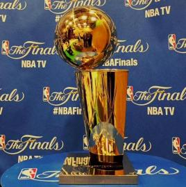
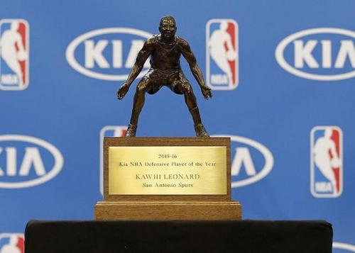
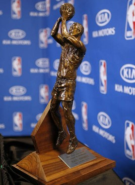
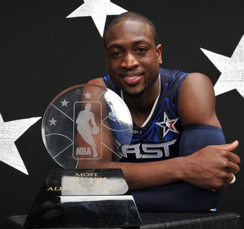
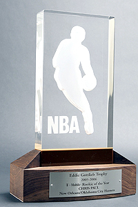
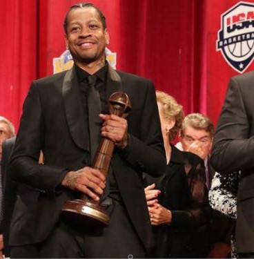

奥布莱恩杯回到头部

拉里·奥布莱恩冠军奖杯（Larry O'Brien NBA Championship Trophy）是美国职业篮球联赛（NBA）每年颁发给NBA总决赛系列赛获胜球队的奖杯。该奖杯自1977年开始启用，用以取代之前的沃尔特·A·布朗奖杯。该奖杯一直沿用“沃尔特·A·布朗奖杯”的旧称直到1984年NBA总决赛后才将该奖杯命名为“拉里·奥布莱恩冠军奖杯”，用以纪念前NBA主席（后来称之为NBA总裁）拉里·奥布莱恩，其在1975-1983年间担任NBA主席一职。在加入NBA之前，拉里·奥布莱恩曾在总统林登·贝恩斯·约翰逊任期内（1965-1968年间）担任美国邮政总长一职。
总决赛最有价值球员回到头部
 历届总决赛MVP是NBA在总决赛上评选出的最有价值球员。总决赛MVP又叫做FMVP，称为比尔·拉塞尔杯：
2010—科比·布莱恩特，洛杉矶湖人队
2011—德克·诺维茨基，达拉斯小牛队
2012—勒布朗·詹姆斯，迈阿密热火队
2013—勒布朗·詹姆斯，迈阿密热火队
2014—科怀·伦纳德，圣安东尼奥马刺队
2015—安德烈·伊戈达拉，金州勇士队
2016—勒布朗·詹姆斯，克里夫兰骑士队
2017—凯文·杜兰特 [1] ，金州勇士队
2018—凯文·杜兰特，金州勇士队
2019—科怀·伦纳德，多伦多猛龙队
2020—勒布朗·詹姆斯，洛杉矶湖人队
历届总决赛MVP是NBA在总决赛上评选出的最有价值球员。总决赛MVP又叫做FMVP，称为比尔·拉塞尔杯：
2010—科比·布莱恩特，洛杉矶湖人队
2011—德克·诺维茨基，达拉斯小牛队
2012—勒布朗·詹姆斯，迈阿密热火队
2013—勒布朗·詹姆斯，迈阿密热火队
2014—科怀·伦纳德，圣安东尼奥马刺队
2015—安德烈·伊戈达拉，金州勇士队
2016—勒布朗·詹姆斯，克里夫兰骑士队
2017—凯文·杜兰特 [1] ，金州勇士队
2018—凯文·杜兰特，金州勇士队
2019—科怀·伦纳德，多伦多猛龙队
2020—勒布朗·詹姆斯，洛杉矶湖人队
常规赛最有价值球员回到头部
 联盟MVP是Most Valuable Player缩写（最有价值球员），官方名称：美国职业篮球联赛最有价值球员奖（National Basketball Association Most Valuable Player Award ，简称MVP），是一个自1955-1956赛季以来每年对美国职业篮球联赛（NBA）常规赛中全场表现最佳的球员所颁发的一个奖项。为纪念NBA首位总裁莫里斯·波多罗夫，于是将MVP奖杯命名为“莫里斯·波多罗夫杯”。
联盟MVP是Most Valuable Player缩写（最有价值球员），官方名称：美国职业篮球联赛最有价值球员奖（National Basketball Association Most Valuable Player Award ，简称MVP），是一个自1955-1956赛季以来每年对美国职业篮球联赛（NBA）常规赛中全场表现最佳的球员所颁发的一个奖项。为纪念NBA首位总裁莫里斯·波多罗夫，于是将MVP奖杯命名为“莫里斯·波多罗夫杯”。
最佳防守球员回到头部

美国职业篮球联赛年度最佳防守球员奖（DPOY/National Basketball Association's Defensive Player Of the Year Award）是每年对NBA常规赛中防守表现最佳的球员所颁发的奖项，于1982-1983赛季设立。
根据联盟的规定，该奖项由美国以及加拿大的体育记者和电视评论员共同投票评出，其中第一名选票获得5分，第二名选票获得3分，第三名选票将获得1分。最终得分最高的球员将获得该奖项，与是否拿到最多的第一名选票无关.
最佳第六人回到头部

美国职业篮球联赛年度最佳第六人奖是一个自1982-1983赛季以来每年对美国职业篮球联赛（NBA）中对其所在球队最有价值的替补球员（或第六人）所颁发的一个奖项。
该奖项由全美及加拿大的体育记者和播音员进行投票选出的。每一位评委分别投票选出第一名、第二名与第三名的球员。球员获得每一张第一名的选票将获得5分，第二名的选票将获得3分，第三名的选票将获得1分。最终得分最高的球员获得该奖项（无论该球员是否获得最多的第一名选票）。
全明星赛最有价值球员回到头部

NBA全明星赛（NBA All Star Game）是由美国国家篮球协会在1951年3月2日首次举行之后演变为每年一度的NBA球星汇集的表演赛。每年由东西部两个地区的最佳球员组成两支球队举行一场比赛决定胜负。经过演变之后，当代的全明星赛已经发展成为“全明星周末”，为期7天。奖杯颁给比赛中表现最好的一位球员。
年度最佳新秀回到头部

美国职业篮球联赛年度最佳新秀奖（National Basketball Association's Rookie of the Year Award）是一个自1952-1953赛季以来每年对美国职业篮球联赛（NBA）常规赛中表现最佳的新秀球员所颁发的一个奖项。获奖者将获得“埃迪·戈特利布杯”，这个奖杯是以1946-1947赛季带领费城76人队获得NBA总冠军的76人队主教练埃迪·戈特利布的名字命名的。
名人堂回到头部

奈史密斯篮球名人纪念堂（Naismith Memorial Basketball Hall of Fame）是一幢三层大楼，位于美国91号高速公路附近。占地54000平方英尺。
1968年由马萨诸塞州斯普林菲尔德学院迁来。与多数球迷想象中的不同：名人堂不仅针对NBA，而面对全世界所有对篮球事业有卓越贡献的人。名人堂本质上是1个对外开放的篮球博物馆，馆中主要陈列物品包括篮球、图文、录像带、光碟等资料。
由于其特殊地位，令参观者络绎不绝。名人堂拥有室内小篮球场给参观者体验气氛，还有小型影院可供播放篮球影音资料，当然，还陈列着一张张照片以及照片边上的介绍性文字，照片上的人物就是人们口中的“名人堂成员”。